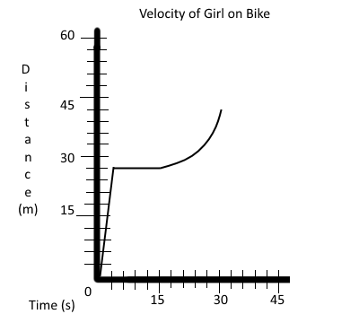

Warm-Ups
Warm-Up 1/4/19
Write a description in your own words of velocity
Description of how fast an object is moving in a direction
Warm-Up 1/7/19
Write a description in your own words of acceleration
Changes in how fast you're moving and/or direction
Warm-Up 1/8/19
What is the equation for...
Speed=Distance/Time
Velocity=Displacement/Time
Accelleration=Change in Velocity/Time
Warm-Up 1/9/19
What can we say Acceleration, Velocity, and Speed all have in common with one another?
They all are different ways to measure motion
Warm-Up 1/14/19
Fill in 2 things you learned in your KWL chart
K
Speed measurement (MP/H)
Newton's laws
W
Does mass affect an object's motion?
Does volume affect it?
L
Speed=D/T
Speed doesn't include direction
Warm-Up 1/15/19
Define distance and displacement
Distance: The length of the path between two points
Displaceent: Direction and distance of a straight line from a start and end point
Warm-Up 1/24/19
What is acceleration? What is an example of acceleration?
Acceleration is how fast something changes in speed and/or direction an object is traveling
When something is speeding up or slowing down
Warm-Up 1/25/19
A car is traveling at 15 m/s. It starts to decelerate steadily. It comes to complete stop in 10 seconds. What is it's acceleration?
-15/10=-1.5m/s^2
Warm-Up 1/31/19
A child drops a ball from a window. The ball strikes the ground in 3 seconds. What was the velocity of the ball the instant before it hit the ground?
3*9.8=29.4m/s^2 down
Warm-Up 2/4/19
Please come up with a story that describes the motion in this graph
A biker sped up from 0m/s to 20m/s after 5 seconds meaning their acceleration was 4m/s^2. They maintain this speed for 5 seconds, then decelerate from 20m/s to 0m/s after 5 more seconds, making their acceleration was -4m/s^2.
Warm-Up 2/5/19
Draw a distance vs time graph that shows this situation:
A girl rides her bike at a speed of 3m/s for 9s, then stops to talk with a friend for 10s then accelerates towards the park to race her friend for 15s.
